31
31.1
This submenu contains commands for installing, running and recording macros, as well as any macro commands added by Macros contained in a file named StartupMacros.txt, in the macros folder, are automatically added to this submenu when ImageJ starts up. By design, only one set of macros can be installed at a time. As such, the last set of macros installed by (or by the More Tools Menu↑) will always replace previously installed macros.
31.1.1
Adds one or more macros contained in a file to the bottom of this submenu. To install a set of macros, and at the same time view their source code, open the macro file with and use Editor↑’s command. Macros in the file ImageJ/macros/StartupMacros.txt are automatically installed when ImageJ starts up. Similarly, with ImageJ 1.44f and later, newly opened macro sets with two or more macros are also automatically installed in this menu.
31.1.2
Loads and runs a macro without opening it in Editor↑. To run a macro, and at the same time view its source code, open it with and use the editor’s command.
31.1.3
Opens ImageJ/macros/StartupMacros.txt. The same file can be opened by holding Shift while selecting Startup Macros from the drop-down menu (see More Tools Menu↑).
31.1.4
Opens the ImageJ command recorder. To create a macro, open the recorder, use one or more ImageJ commands, then click Create. When the recorder is open, each menu command you use generates a macro run() function call. The run() function has one or two string arguments. The first is the command name. The optional second argument contains dialog box parameters. Examples:
- Create a rectangular, oval or line selection and the recorder will generate a makeRectangle(), makeOval() or makeLine() function call.
- Click on Auto or Set in the window to generate a setThresold() call, and on Reset to generate a resetThresold() call.
- Select an image from the Window menu to generate a selectWindow() call.
- Click in the window to generate setForegroundColor() and setBackgroundColor() calls.
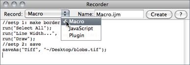
Note that you can interact with the recorder window by deleting or commenting lines of code or pasting text from Editor↑. This may be specially useful when writing your own macros or to generate simple ‘Session Logs’. In this case, you would start the Recorder and let ImageJ keep track of the performed actions by generating macro code.
Editor↑, Extending ImageJ↑, The ImageJ Macro Language --- Programmer's Reference Guide, Fiji’s Introduction into Macro Programming
31.2
This submenu contains commands for creating keyboard shortcuts and for installing and removing plugins.
31.2.1
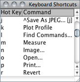
This command generates a table with the ImageJ keyboard shortcuts in one column and the commands they call in another. Commands prefixed by ‘ * ’ refer to shortcuts created with while commands prefixed by ‘ ^ ’ refer to installed macros (listed in ) and override ImageJ default hot-keys.
Note that unless Require control key for shortcuts in is checked, you do not have to hold down Ctrl to use a keyboard shortcut . E.g., to open an image () simply press O.
31.2.2
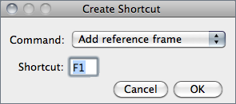
Assigns a keyboard shortcut to an ImageJ menu command and lists the shortcut in the Shortcuts submenu.
Select the command from the popup menu and enter the shortcut in the text field. A shortcut can be a lower or uppercase letter or ‘F1’ through ‘F12’. Use to get a list of shortcuts that are already in use.
31.2.3
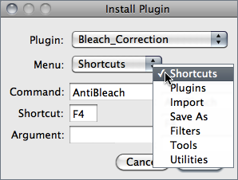
Installs a plugin in a user-specified submenu. Plugins with a showAbout() method are also automatically added to the submenu.
Use the first popup menu to select the plugin and the second to select the submenu it is to installed in. The command must be different from any existing ImageJ command. Shortcut (optional) must be a single letter or ‘F1’ through ‘F12’. Argument (optional) is the string that will passed to the plugin’s run method.
31.2.4
Removes commands added to the Shortcuts submenu by Also removes commands added by and removes plugins installed in the Plugins menu. The menus are not updated until ImageJ is restarted.
31.3
31.3.1
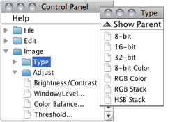
This command [47] opens a window containing ImageJ commands in a hierarchical tree structure. Click on a leaf node to launch the corresponding ImageJ command (or plugin). Double click on a tree branch node (folder) to expand or collapse it. Click and drag on a tree branch node (folder) to display its descendants in a separate (child) window. In a child window, click on ‘Show Parent’ to re-open the parent window.
31.3.2
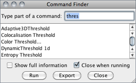
The quickest way to find a command without having to navigate through all the menus [48].
Evoke the prompt by pressing L (as in ‘command Launcher’, or ‘Locator’). If you type part of a command name, the list will only show commands that match that substring. If only a single command matches then that command can be run by pressing Enter.
If multiple commands match, click with the mouse to select a command to run. Alternatively pressing the up or down keys will move keyboard focus to the list and the selected command can be run by pressing Enter. Pressing Backspace switches focus back to the prompt. Double clicking on a command will run that command. Pressing Esc closes the window.
Show full information If checked, the Command Finder will display the location of the listed menu entries.
Fuzzy matching (Fiji only) Activates approximate string matching. Useful if you are not sure about the command spelling.
Close when running If checked, the Command Finder will dismiss after choosing Run or pressing Enter.
Export Prints the filtered list of commands to an ImageJ table.
31.3.3
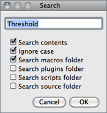
Searches for macros (.txt, .ijm), scripts (.js, .py, .rb, .clj, .bsh), plugins source (.java) and .html files containing a particular string.
Search is performed recursively (subdirectories are included) and results displayed in the Log Window↑. In the Log window, double click on a file path to have it open.
Search contents Specifies if the search should be restricted to filenames or extended to file contents. If checked, the line number where the string was found is displayed.
Ignore case Specifies if the search should be case-insensitive.
Search macros folder Extends the search scope to ImageJ/macros/.
Search plugins folder Extends the search scope to ImageJ/plugins/.
Search scripts folder Extends the search scope to ImageJ/scripts/ (if present).
Search source folder Extends the search scope to ImageJ/source/(if present). Requires the ImageJ source code to be downloaded from http://imagej.nih.gov/ij/download/src/ and extracted into the ImageJ folder.
Note that you can perform searches in other directories by choosing none of the folders above mentioned. In this case, you will be asked to choose a target directory on a second dialog prompt.
31.3.4
By implementing the IJEventListener, CommandListener and ImageLister interfaces, this command is able to monitor foreground and background color changes, tool switches, Log window closings, command executions and image window openings, closings and updates.
Debug mode ()
31.3.5
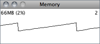
Displays a continuously updated graph of ImageJ’s memory utilization, which can be useful for detecting memory leaks.
Memory usage and running threads are displayed above the graph. As for the IJ Status bar↑, clicking on the window will reclaim unused memory by running the Java garbage collector.
Ideally you should be able to open several images, process them, close them, and the amount of memory used will be the same as when you started.
31.3.6
Copies the screen to an RGB image and displays that image a new window. Holding Ctrl Shift G will capture the screen while a modal dialog box is active if the dialog is based on ImageJ’s GenericDialog class.
31.3.7
Copies a WYSIWYG version of active image to an RGB image and displays that image a new window.
31.3.8
This command displays various ImageJ properties (Java version, OS[?] name and version, path separator, location of directories, screen size, etc.) in a text window. Holding Alt lists all Java properties
31.3.9
This command lists, in a text window, the currently running threads and their priorities.
31.3.10
Runs 62 image processing operations on the current image and displays the elapsed time in the ImageJ status bar. Additional benchmarks, test results, and source code are available in the Benchmarks package of plugins.
31.3.11
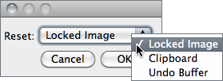
Use this command to unlock a locked Image, or to reclaim memory used by the clipboard and undo buffers (cf. Undo and Redo↑).
31.4
This submenu contains commands opening editor windows that can be used to edit and run macros, scripts and plugins. It also has a command that opens a text window of a specified size and a command that opens a table that macros can write to. The editor windows opened by , and contain prototype Java code for the three types of plugins supported by ImageJ.
31.4.1
Opens a blank editor window with the title ‘Macro.txt’.
31.4.2
Opens Macro_Tool.txt, an example macro tool that creates circular selections.
31.4.3
Opens a blank editor window with the title ‘Script.js’.
31.4.4
Opens an editor window containing a prototype plugin that implements the PlugIn interface. Plugins of this type open, capture or generate images. The prototype displays Hello world!. Press Ctrl R () to compile and run it. Note that the name you choose for the plugin should include at least one underscore. Another example is the Step Maker plugin.
31.4.5
Opens an editor window containing a prototype plugin that implements the PlugInFilter interface. Plugins of this type process the active image. The prototype inverts the active image twice. Another example is the Image Inverter.
31.4.6
Opens an editor window containing a prototype plugin that extends the PlugInFrame class. Plugins of this type displays a window containing controls such as buttons and sliders. The prototype opens a window containing a text area. Another example is the IP Demo plugin.
31.4.7
Opens a prototype plugin tool, demonstrating ij.plugin.tool.PlugInTool [49].
31.4.8
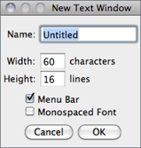
Opens a text window of a specified size that macros can write to. PrintToTextWindow, Clock and ProgressBar are examples of macros that write to a text window.
,
31.4.9
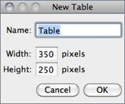
Opens a blank table, similar to the Results table, that macros can write to. SineCosineTable2 is an example of such a macro.
31.5
Compiles and runs a plugin. Runs a plugin if the name of the selected file ends in .class. Requires that ImageJ be running on a Java Virtual Machine that includes the javac compiler, which is contained in the Tools.jar archive. Tools.jar is included with the Windows and Linux versions of ImageJ bundled with Java, and it is pre-installed on Mac OS X. Troubleshooting information can be found under ‘Compiling Plugins’ in the Linux and Windows release notes.
The command can be used to configure the javac compiler. Since ImageJ 1.44c and later, adds the Bio-Formats plugin (loci_tools.jar) to the Java compiler’s classpath.